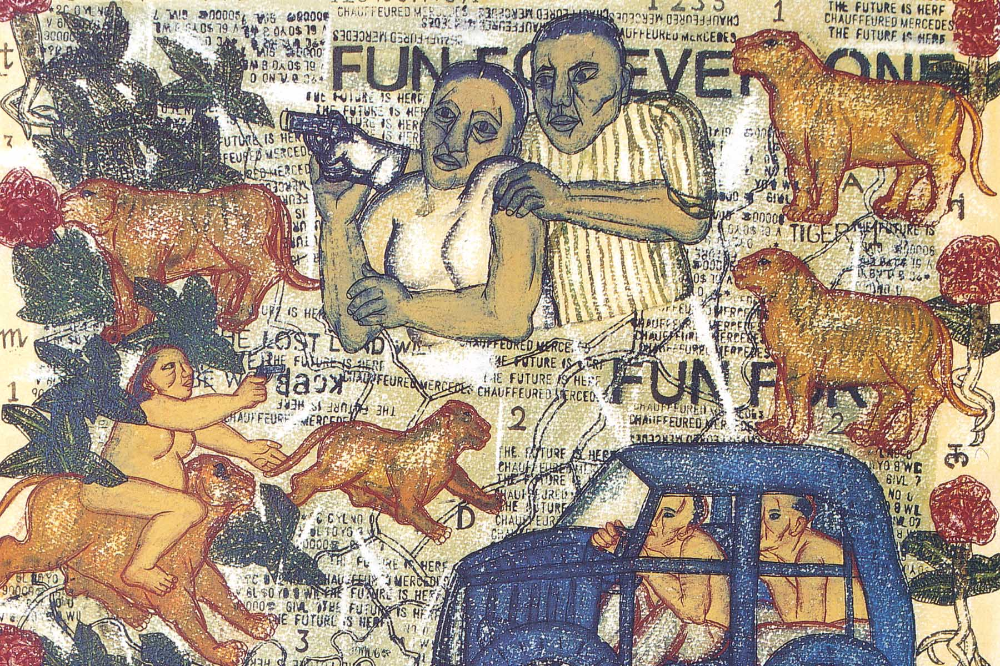
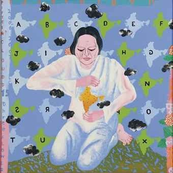

Arpita Singh (born Arpita Dutta, 1937) is an Indian artist. She was born in 1937 at Baranagar in Kolkata, West Bengal, India). Known to be a figurative artist and a modernist, her canvases have both a story line and a carnival of images arranged in a curiously subversive manner. Her artistic approach can be described as an expedition without destination. Her work reflects her background. She brings her inner vision of emotions to the art inspired by her own background and what she sees around the society that mainly affects women. Her works also include traditional Indian art forms and aesthetics, like miniaturist painting and different forms of folk art, employing them in her work regularly
Awards

Arpita Singh has exhibited all over the world, at both individual and group exhibits. She has also won a number of awards for her work.
Those include:
2014: Fellowship of Lalit Kala Akademi
2011: Padma Bhushan 1998-1999: Kalidas Samman, Bhopal
1991: Parishad Samman, Sahitya Kala Parishad, New Delhi
Exhibitions

Arpita Singh has more than twenty solo shows to her credit including several in Chandigarh, Bhopal, Mumbai and New Delhi. They include:
2019
Submergence: In the midst of here and there, at KNMA, Saket, Delhi
2018
Tying down time II, Talwar Gallery, New York
2017
Tying down time, Talwar Gallery, New York
2006
Picture Postcard 2003 – 2006, Vadehra Art Gallery, New Delhi
2003
Memory Jars, Bose Pacia Modern, New York
1994
Drawing 94, Gallery Espace, New Delhi